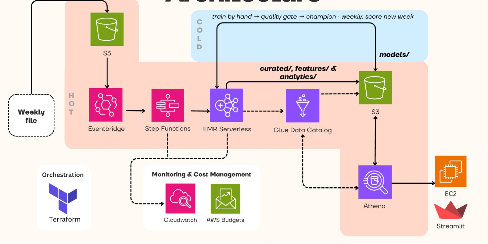

Case study · Big Data (IS459)
A weekly pipeline on AWS that flags suspicious payments for analysts, and warns when criminals start moving money in new ways the model wasn't built to catch.
Question 1
Laundering is spread across many accounts, so checking one payment at a time misses it. Set the alert bar too low and analysts drown in false alarms; too high and real cases slip through.
Question 2
Detection is set up once, but criminals keep changing how they move money. When a rule stops catching them, nothing raises an alarm. Banks need an early warning.
1 · Arrive
A new week of transactions lands and starts the pipeline on its own.
2 · Clean
Spark cleans millions of rows and builds features for each account.
3 · Score
A model scores every payment and groups alerts into likely schemes.
4 · Watch for change
Check whether this week's patterns have really shifted.
5 · Show
Results go to a dashboard, and a person approves any retraining.

Every week, the pipeline compares the mix of payment types, amounts, times and currencies with a normal baseline. The hard part is not crying wolf, so a change only counts if:
It's bigger than normal week-to-week noise
It passes a statistical test, not just a hunch
It lasts at least two weeks in a row
Honest payments haven't changed too
Then it estimates the week the change began, so the team knows where to look.
after new tactics started, the change was confirmed
false alarms on the control data, where nothing changed
of new-tactic cases caught after the team retrained the model
On IBM's dataset, it correctly found no tactic change. And across the whole team's pipeline, about 9 in 10 alerts on unseen data were real laundering, at a volume analysts could work through.
The people who own these models get an early, dated warning when criminals shift tactics, without being flooded by false alarms, and a person always approves any change to the model.